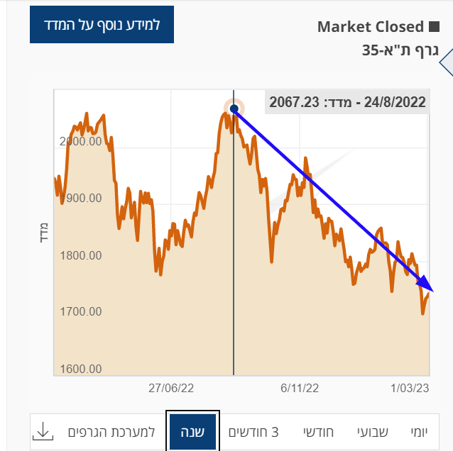
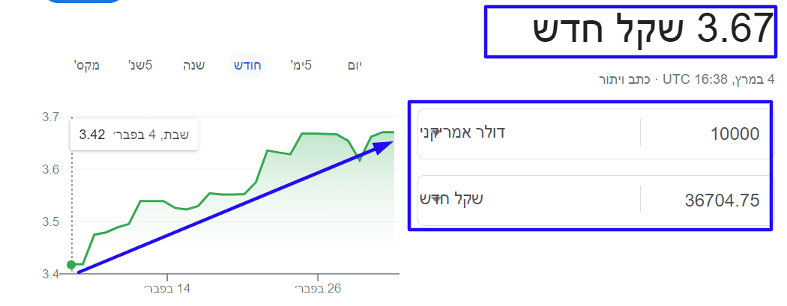

הרפורמה משפטית , קריסות הבורסה ונפילת השקל מול הדולר.
שבוע שעבר קיבלתי כמה שיחות והודעות
מעוקבים וכולם תחת השאלה:
האם לעשות משהו בנוגע לפנסיה
נוכח ירידות השקל מול הדולר?
אז במאמר הקצר הבא אפרט במה דברים אמורים,
האם יש סיבה לדאגה ומה מתרחש מאחורי הקלעים.
הרפורמה המשפטית האם פוגעת בפנסיה?
לאור הרפורמה נוצר לא מעט אי-וודאות גם עבור משקיעים
מחוץ ופנים ישראל.
אי-וודאות לא טובה למשקיעים ומייצר אי-יציבות.
כך שלא מעט משקיעים הודיעו כי לא ישקיעו את כספם בישראל.
באופן כללי בורסה אוהבת יציבות ולא אוהבת אי-וודאות.
כך שלאור אמירות אילו והרפורמה הסוערת
השוק הופך “עצבני” אנשים מושכים את כספם
מהבורסה הישראלית דבר שמוביל
לתגובת שרשרת וכך הבורסה בישראל צונחת.

המרת שקל לדולר
משמעות נוספת היא שמשקיעים רבים
לאור חשש מהרפורמה ועל החשש שישראל הופכת אולי למסוכנת יותר להשקעות
ממירים את השקל שלהם לדולר.
ביקוש והציעה
כמו בנדל”ן וכמו בכל דבר זה ביקוש והציעה.
אם משקיעים מוכרים את השקל שלהם
ורצים לרכוש דולר, הדולר מתחזק והשקל נחלש.
וזה בדיוק מה שקורה.

מה המשמעות הכלכלית לכיס שלנו תכלס?
אם אתם רוכשים דרך רשת וכד’
על מוצר שעלה / חופשה / טיסה
10,000 $ בשער ייציג של 3.42 ₪ לפני חודש,
היה עולה לכם בשקל – 34,200 ש”ח
בעקבות החלשות השקל מול הדולר,
תשלמו: 36,704 ₪
פער של 2,504 ₪ יותר בגלל ירידת השקל
האם כדי אולי לא להשקיע יותר בישראל?
אז אחת השאלות שנשאלתי השבוע שאלה
אותי:
“האם לא כדי להצמיד מהר את הפנסיה לדולר,
או האם למשוך את כספי הפיקדון / ההשקעות
בבורסה ולהמיר לשוק האמריקאי?”
ע”מ לענות לשאלה זו צריך לשאול את עצמינו:
איפה מושקע היום כספי הפנסיה שלנו?
אז אני מזמין אתכם לבדוק.
אבל שלי למשל ושל רבים רבים רבים שאני מכיר,
מכספי הפנסיה מושקעים לא מעט אחוזים דווקא במדדים
בחו”ל כמו למשל אצלי הפנסיה מוצמד למחכה המדד ב S&P 500 .
(אין זו המלצה או תחליף ליעוץ רק מעורר אתכם לבדוק את עצמכם).
תהליך ההשקעה בכספי הפנסיה בחו”ל
אני זוכר אותו מתרחש באופן ברור לפני כ5-6 שנים.
שחברות ניהול החלו לפתוח אפיקים של השקעה בארה”ב.
היום זה אפילו פופולרי להיכנס לאזור האישי שלכם בחברת הפנסיה,
לבחור את החילוק ההשקעה שלכם
וכמה אחוזים אתם רוצים להשקיע איפה.
למעשה, כבר אנחנו מוגנים באופן יחסי מנפילות הבורסה בישראל בשל כך.
רגשות וכסף
בעיסוק בזה מזכיר לי את הבהלה בקורונה
בעת קריסת הבורסות בעולם.
ואז נזכרתי מאמירה מעולם הפסיכולוגיה התנהגותית
שאומר “להוציא את הרגש מההחלטה הכלכלית”.
הבהלה היא רגשית ולכן להוציא את הכסף
בגלל אותה בהלה עשוי להוביל לטעות כלכלית.
האם אני טועה ומה ההשלכה לטעות
אז בוודאי שיכול להיות אפילו מאוד שאני טועה!
וכל מה שרשמתי כאן הם הערכות שלי בלבד.
לכן לכו לבדוק מה קורה בפנסיה שלכם.
אך גם אם אני טועה, בטווח הרחוק השווקים
מתרגילים למציאות חדשה
(גם אם היא באמת חדשה ולא רעש תקשורתי).
כך שאני מאמין שהשוק יתקן את עצמו.
סיכום
האם לעשות משהו בנוגע לפנסיה?
- תבדקו היכן הם מושקעים והאם זה מתאים לכם.
- בעקבות הרפורמה המשפטית אישית לא הייתי משנה
את מדניות ההשקעות שלי ולא הייתי מתרגש מזה
ובטח לא מקבל את ההחלטות שלי על סמך רעש תקשורתי או רגשי.
השבוע יחול פורים ובמיוחד לצד הרפורמה המשפטית,
בעניי פורים זה אחדות עם ישראל.
זה ההתחלה וסיום של פורים.
ההתחלה של “ישנו עם אחד מפוזר ומפורד בין העמים…” (פרק ג’ פסוק ח’).
המן מבין שהחולשה שלנו זה חוסר האחדות שלנו.
אסתר שמבינה את זה ומבקשת ממרדכי:
“לך כנוס את כל היהודים….”. (פרק ד’ פסוק ט”ז).
ע”מ להחזיר את אחדות עם ישראל ואת החוזקה שלנו.
והפסוק האחרון מתקשר לי לבן אדם לחברו המתואר על מרדכי:
“רצוי לרב אחיו-דרש טוב לעמו, ודבר שלום לכל זרעו.” (פרק י’).